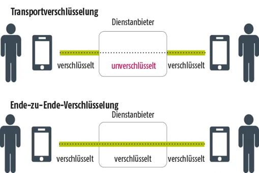

Es ist kompliziert. WhatsApp nutzt zwar Ende-zu-Ende-Verschlüsselung für die übermittelten Nachrichteninhalte (Texte, Bilder, Sprachnachrichten etc.), doch die sogenannten Meta-Daten sind zum Teil komplett öffentlich. Eins nach dem anderen:
Ende-zu-Ende-Verschlüsselung bedeutet, dass die Nachrichten auf dem Absender*innengerät verschlüsselt werden, noch bevor sie über das Internet abgeschickt werden. Sie bleiben den ganzen Weg über verschlüsselt und können erst nach dem Empfang auf dem Empfänger*innengerät wieder entschlüsselt werden.
Im Messaging-Kontext fallen viele personenbezogene Daten an, bespielsweise
Telefonnummer und Profilbild werden beim Anbieter unverschlüsselt gespeichert und über eine Programmierschnittstelle (API) zugägnlich gemacht. Es existieren sogar Dritt-Anbieter-Apps, die eine "Überwachung" von WhatsApp-Accounts anhand dieser Daten in Kombination mit dem Aktivitätsstatus erlauben.
Der Upload des Telefonbuchs ist der Aspekt an WhatsApp, der die App unvereinbar mit der DSGVO macht. Hierdurch werden bei der Nutzung der App die presonenbezogenen Daten der Kontakte verarbeitet, ohne dass diesen eine Möglichkeit zum Widerspruch eingeräumt wird. Dieses Problem haben auch andere Messaging-Apps, die Telefonbuchdaten im Klartext abgleichen.
Signal verwendet die selbe Verschlüsselungwie WhatsApp (genauer gesagt wurde das Signal-Team von WhatsApp beauftragt, die Signal-Verschlüsselung auch in WhatsApp einzubauen), auch der Kontaktabgleich passiert hier voll-verschlüsselt und DSGVO-konform. Außerdem wird Signal von einer gemeinnützigen Organisation in den USA betrieben und weiterentwickelt. Der Source Code der App ist öffentlich einsehbar.
Telegram hat keinerlei Verbindungen zu den USA, der Messenger wird von einer Londoner Firma entwickelt, das Datenzentrum steht in Dubai. Telegram nutzt für die Nachrichteninhalte standardmäßig keine Ende-zu-Ende-Verschlüsselung und ist deshalb nicht zu empfehlen! In der Vergangenheit wurde oft der große "Datenhunger" des Messengers aufgedeckt, ein Telefonbuch-Abgleich steht auch hier im Konflikt mit der DSGVO. Die App ist zwar ohne Telefonbuchdaten nutzbar, aber nur in eingeschränkter Funktion.
Threema ist eine kostenpflichtige Messaging-App aus der Schweiz, deren Apps mittlerweile auch quelloffen sind. Nachrichteninhalte werden Ende-zu-Ende-verschlüsselt übermittelt. Eine Besonderheit an Threema ist, dass der Dienst ohne Telefonnummer genutzt werden kann, die Nutzer*innenkennung besteht aus einer Buchstaben-Zahlen-Kombination.
iMessage ("Nachrichten") ist die standard-App auf iPhones für SMS. Wenn allerdings zwei iPhone-Nutzer*innen miteinander über diese App kommunizieren, wird statt SMS ein Ende-zu-Ende-verschlüsseltes Messaging-Protokoll verwendet, erkennbar an den blauen statt grünen Nachrichtenblasen. Die nahtlose Integration in das Betriebssystem senkt die Adaptions-Barriere, Nachteil ist jedoch die enge Bindung an die Apple-Plattform. iMessage ist nicht für Android verfügbar.